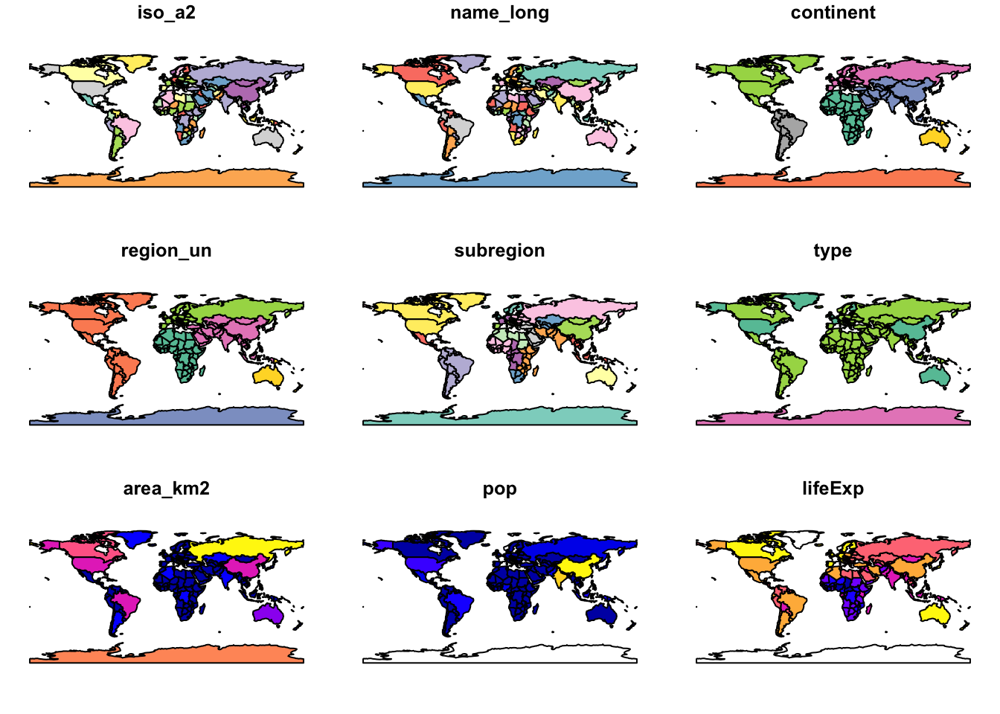
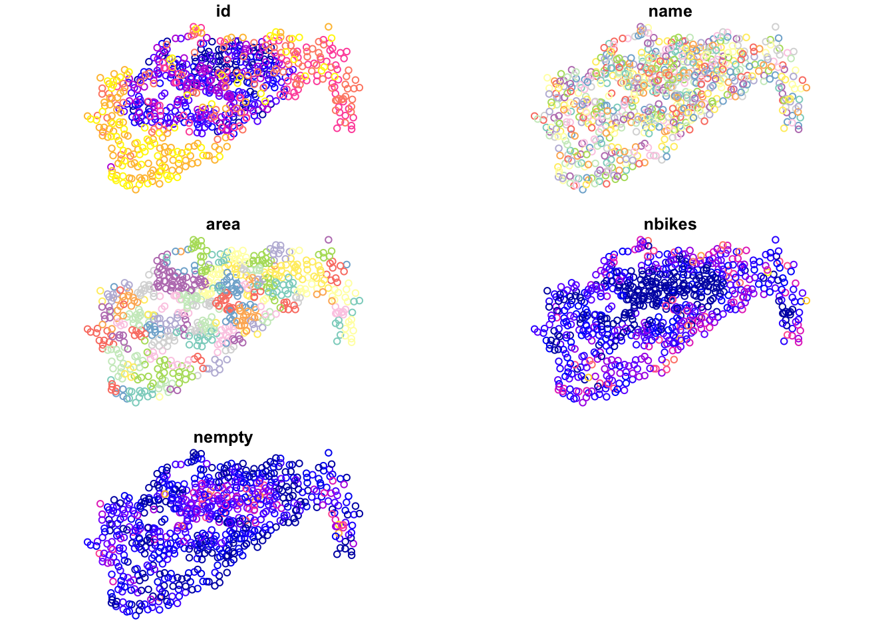
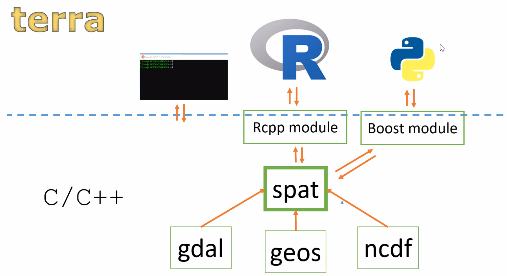
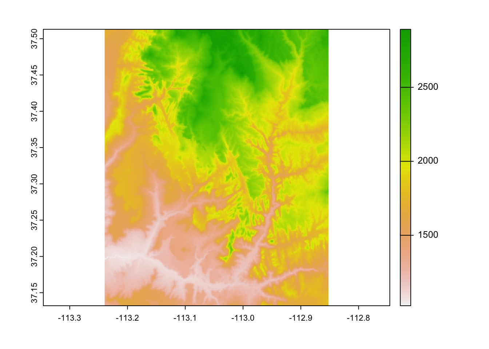
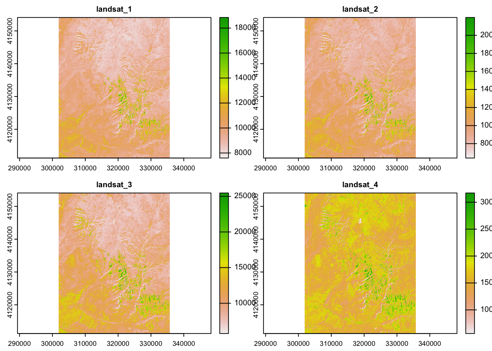
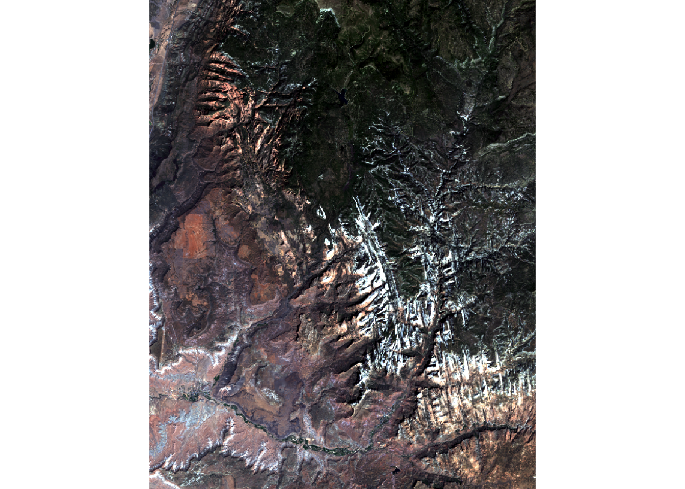
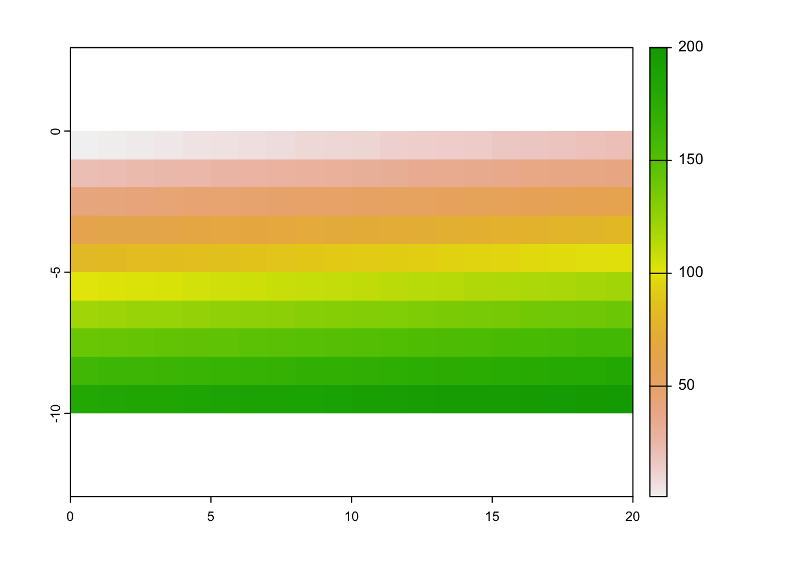

Chapter 2 Introduction to the R-spatial ecosystem
- https://www.r-spatial.org/
- https://www.rspatial.org/
- https://geocompr.github.io/
- #rspatial and #geocompr on Twitter
What can you do with geographic data + R?
Exploratory data analysis (EDA)
Output data in different formats (e.g. creating a .GeoTIFF or .shp file to share with others)
Data processing (e.g. adding new variables, ‘adding value’)
Data transformation (e.g. changing CRS, reducing size via simplification/aggregation)
Data visualization
Web application development
Software development e.g. to share new methods
dplyr, rmapshaper - processing of attribute tables/geometries
rnaturalearth, osmdata, getSpatialData - spatial data download
rgrass7, qgisprocess, RSAGA, link2GI - connecting with GIS software
many more…
2.1 R packages - specialized packages
- spatstat
- spdep
- spatialreg
- dismo
- landscapemetrics - part of https://github.com/r-spatialecology
- RStoolbox
- rayshader
- gdalcubes
- sfnetworks
- many more…
Learn more at https://cran.r-project.org/web/views/Spatial.html.
2.2 R’s spatial ecosystem(s)

Figure 2.1: Source: https://geocompr.robinlovelace.net
2.3 Vector data

Figure 2.2: Source: https://www.r-spatial.org/r/2020/03/17/wkt.html
- The sf package is the successor of the sp package based on the OGC standard Simple Features
- https://journal.r-project.org/archive/2018/RJ-2018-009/RJ-2018-009.pdf
- Combines the functionality of three previous packages: sp, rgeos and rgdal
- https://www.mail-archive.com/r-sig-geo@r-project.org/msg18468.html
- https://github.com/r-spatial/sf/wiki/Migrating
- Most of the functions in this package start with a prefix
st_
## Linking to GEOS 3.10.2, GDAL 3.4.2, PROJ 7.2.0; sf_use_s2() is TRUE## [1] "%>%" "as_Spatial"
## [3] "dbDataType" "dbWriteTable"
## [5] "gdal_addo" "gdal_create"
## [7] "gdal_crs" "gdal_extract"
## [9] "gdal_inv_geotransform" "gdal_metadata"
## [11] "gdal_polygonize" "gdal_rasterize"
## [13] "gdal_read" "gdal_read_mdim"
## [15] "gdal_subdatasets" "gdal_utils"
## [17] "gdal_write" "gdal_write_mdim"
## [19] "get_key_pos" "NA_agr_"
## [21] "NA_bbox_" "NA_crs_"
## [23] "NA_m_range_" "NA_z_range_"
## [25] "pivot_wider.sf" "plot_sf"
## [27] "rawToHex" "read_sf"
## [29] "sf_add_proj_units" "sf_extSoftVersion"
## [31] "sf_proj_info" "sf_proj_network"
## [33] "sf_proj_pipelines" "sf_proj_search_paths"
## [35] "sf_project" "sf_use_s2"
## [37] "sf.colors" "st_agr"
## [39] "st_agr<-" "st_area"
## [41] "st_as_binary" "st_as_grob"
## [43] "st_as_s2" "st_as_sf"
## [45] "st_as_sfc" "st_as_text"
## [47] "st_axis_order" "st_bbox"
## [49] "st_bind_cols" "st_boundary"
## [51] "st_buffer" "st_cast"
## [53] "st_centroid" "st_collection_extract"
## [55] "st_combine" "st_contains"
## [57] "st_contains_properly" "st_convex_hull"
## [59] "st_coordinates" "st_covered_by"
## [61] "st_covers" "st_crop"
## [63] "st_crosses" "st_crs"
## [65] "st_crs<-" "st_delete"
## [67] "st_difference" "st_dimension"
## [69] "st_disjoint" "st_distance"
## [71] "st_drivers" "st_drop_geometry"
## [73] "st_equals" "st_equals_exact"
## [75] "st_filter" "st_geometry"
## [77] "st_geometry_type" "st_geometry<-"
## [79] "st_geometrycollection" "st_graticule"
## [81] "st_inscribed_circle" "st_interpolate_aw"
## [83] "st_intersection" "st_intersects"
## [85] "st_is" "st_is_empty"
## [87] "st_is_longlat" "st_is_simple"
## [89] "st_is_valid" "st_is_within_distance"
## [91] "st_jitter" "st_join"
## [93] "st_layers" "st_length"
## [95] "st_line_merge" "st_line_sample"
## [97] "st_linestring" "st_m_range"
## [99] "st_make_grid" "st_make_valid"
## [101] "st_minimum_rotated_rectangle" "st_multilinestring"
## [103] "st_multipoint" "st_multipolygon"
## [105] "st_nearest_feature" "st_nearest_points"
## [107] "st_node" "st_normalize"
## [109] "st_overlaps" "st_point"
## [111] "st_point_on_surface" "st_polygon"
## [113] "st_polygonize" "st_precision"
## [115] "st_precision<-" "st_read"
## [117] "st_read_db" "st_relate"
## [119] "st_reverse" "st_sample"
## [121] "st_segmentize" "st_set_agr"
## [123] "st_set_crs" "st_set_geometry"
## [125] "st_set_precision" "st_sf"
## [127] "st_sfc" "st_shift_longitude"
## [129] "st_simplify" "st_snap"
## [131] "st_sym_difference" "st_touches"
## [133] "st_transform" "st_triangulate"
## [135] "st_union" "st_viewport"
## [137] "st_voronoi" "st_within"
## [139] "st_wrap_dateline" "st_write"
## [141] "st_write_db" "st_z_range"
## [143] "st_zm" "vec_cast.sfc"
## [145] "vec_ptype2.sfc" "write_sf"- This package handles additional vector data types (e.g. polygon and multipolygon are two separate classes), allows for easier data processing, and support for spatial databases such as PostGIS
- https://r-spatial.github.io/sf/ and https://github.com/rstudio/cheatsheets/blob/master/sf.pdf
## Simple feature collection with 177 features and 10 fields
## Geometry type: MULTIPOLYGON
## Dimension: XY
## Bounding box: xmin: -180 ymin: -89.9 xmax: 180 ymax: 83.64513
## Geodetic CRS: WGS 84
## # A tibble: 177 × 11
## iso_a2 name_l…¹ conti…² regio…³ subre…⁴ type area_…⁵ pop lifeExp gdpPe…⁶
## * <chr> <chr> <chr> <chr> <chr> <chr> <dbl> <dbl> <dbl> <dbl>
## 1 FJ Fiji Oceania Oceania Melane… Sove… 1.93e4 8.86e5 70.0 8222.
## 2 TZ Tanzania Africa Africa Easter… Sove… 9.33e5 5.22e7 64.2 2402.
## 3 EH Western… Africa Africa Northe… Inde… 9.63e4 NA NA NA
## 4 CA Canada North … Americ… Northe… Sove… 1.00e7 3.55e7 82.0 43079.
## 5 US United … North … Americ… Northe… Coun… 9.51e6 3.19e8 78.8 51922.
## 6 KZ Kazakhs… Asia Asia Centra… Sove… 2.73e6 1.73e7 71.6 23587.
## 7 UZ Uzbekis… Asia Asia Centra… Sove… 4.61e5 3.08e7 71.0 5371.
## 8 PG Papua N… Oceania Oceania Melane… Sove… 4.65e5 7.76e6 65.2 3709.
## 9 ID Indones… Asia Asia South-… Sove… 1.82e6 2.55e8 68.9 10003.
## 10 AR Argenti… South … Americ… South … Sove… 2.78e6 4.30e7 76.3 18798.
## # … with 167 more rows, 1 more variable: geom <MULTIPOLYGON [°]>, and
## # abbreviated variable names ¹name_long, ²continent, ³region_un, ⁴subregion,
## # ⁵area_km2, ⁶gdpPercap
## # ℹ Use `print(n = ...)` to see more rows, and `colnames()` to see all variable names## Warning: plotting the first 9 out of 10 attributes; use max.plot = 10 to plot
## all
## [1] "/Users/runner/work/_temp/Library/spData/shapes/world.gpkg"## Simple feature collection with 177 features and 10 fields
## Geometry type: MULTIPOLYGON
## Dimension: XY
## Bounding box: xmin: -180 ymin: -89.9 xmax: 180 ymax: 83.64513
## Geodetic CRS: WGS 84
## # A tibble: 177 × 11
## iso_a2 name_l…¹ conti…² regio…³ subre…⁴ type area_…⁵ pop lifeExp gdpPe…⁶
## <chr> <chr> <chr> <chr> <chr> <chr> <dbl> <dbl> <dbl> <dbl>
## 1 FJ Fiji Oceania Oceania Melane… Sove… 1.93e4 8.86e5 70.0 8222.
## 2 TZ Tanzania Africa Africa Easter… Sove… 9.33e5 5.22e7 64.2 2402.
## 3 EH Western… Africa Africa Northe… Inde… 9.63e4 NA NA NA
## 4 CA Canada North … Americ… Northe… Sove… 1.00e7 3.55e7 82.0 43079.
## 5 US United … North … Americ… Northe… Coun… 9.51e6 3.19e8 78.8 51922.
## 6 KZ Kazakhs… Asia Asia Centra… Sove… 2.73e6 1.73e7 71.6 23587.
## 7 UZ Uzbekis… Asia Asia Centra… Sove… 4.61e5 3.08e7 71.0 5371.
## 8 PG Papua N… Oceania Oceania Melane… Sove… 4.65e5 7.76e6 65.2 3709.
## 9 ID Indones… Asia Asia South-… Sove… 1.82e6 2.55e8 68.9 10003.
## 10 AR Argenti… South … Americ… South … Sove… 2.78e6 4.30e7 76.3 18798.
## # … with 167 more rows, 1 more variable: geom <MULTIPOLYGON [°]>, and
## # abbreviated variable names ¹name_long, ²continent, ³region_un, ⁴subregion,
## # ⁵area_km2, ⁶gdpPercap
## # ℹ Use `print(n = ...)` to see more rows, and `colnames()` to see all variable names## Coordinate Reference System:
## User input: WGS 84
## wkt:
## GEOGCRS["WGS 84",
## DATUM["World Geodetic System 1984",
## ELLIPSOID["WGS 84",6378137,298.257223563,
## LENGTHUNIT["metre",1]]],
## PRIMEM["Greenwich",0,
## ANGLEUNIT["degree",0.0174532925199433]],
## CS[ellipsoidal,2],
## AXIS["geodetic latitude (Lat)",north,
## ORDER[1],
## ANGLEUNIT["degree",0.0174532925199433]],
## AXIS["geodetic longitude (Lon)",east,
## ORDER[2],
## ANGLEUNIT["degree",0.0174532925199433]],
## USAGE[
## SCOPE["Horizontal component of 3D system."],
## AREA["World."],
## BBOX[-90,-180,90,180]],
## ID["EPSG",4326]]## [1] "GEOGCRS[\"WGS 84\",\n DATUM[\"World Geodetic System 1984\",\n ELLIPSOID[\"WGS 84\",6378137,298.257223563,\n LENGTHUNIT[\"metre\",1]]],\n PRIMEM[\"Greenwich\",0,\n ANGLEUNIT[\"degree\",0.0174532925199433]],\n CS[ellipsoidal,2],\n AXIS[\"geodetic latitude (Lat)\",north,\n ORDER[1],\n ANGLEUNIT[\"degree\",0.0174532925199433]],\n AXIS[\"geodetic longitude (Lon)\",east,\n ORDER[2],\n ANGLEUNIT[\"degree\",0.0174532925199433]],\n USAGE[\n SCOPE[\"Horizontal component of 3D system.\"],\n AREA[\"World.\"],\n BBOX[-90,-180,90,180]],\n ID[\"EPSG\",4326]]"## [1] "EPSG:4326"## [1] "+proj=longlat +datum=WGS84 +no_defs"cycle_hire_path = system.file("misc/cycle_hire_xy.csv", package = "spData")
cycle_hire_txt = read.csv(cycle_hire_path)
head(cycle_hire_txt)## X Y id name area nbikes nempty
## 1 -0.10997053 51.52916 1 River Street Clerkenwell 4 14
## 2 -0.19757425 51.49961 2 Phillimore Gardens Kensington 2 34
## 3 -0.08460569 51.52128 3 Christopher Street Liverpool Street 0 32
## 4 -0.12097369 51.53006 4 St. Chad's Street King's Cross 4 19
## 5 -0.15687600 51.49313 5 Sedding Street Sloane Square 15 12
## 6 -0.14422888 51.51812 6 Broadcasting House Marylebone 0 18## Simple feature collection with 742 features and 5 fields
## Geometry type: POINT
## Dimension: XY
## Bounding box: xmin: -0.2367699 ymin: 51.45475 xmax: -0.002275 ymax: 51.54214
## Geodetic CRS: WGS 84
## First 10 features:
## id name area nbikes nempty
## 1 1 River Street Clerkenwell 4 14
## 2 2 Phillimore Gardens Kensington 2 34
## 3 3 Christopher Street Liverpool Street 0 32
## 4 4 St. Chad's Street King's Cross 4 19
## 5 5 Sedding Street Sloane Square 15 12
## 6 6 Broadcasting House Marylebone 0 18
## 7 7 Charlbert Street St. John's Wood 15 0
## 8 8 Lodge Road St. John's Wood 5 13
## 9 9 New Globe Walk Bankside 3 16
## 10 10 Park Street Bankside 1 17
## geometry
## 1 POINT (-0.1099705 51.52916)
## 2 POINT (-0.1975742 51.49961)
## 3 POINT (-0.08460569 51.52128)
## 4 POINT (-0.1209737 51.53006)
## 5 POINT (-0.156876 51.49313)
## 6 POINT (-0.1442289 51.51812)
## 7 POINT (-0.1680743 51.5343)
## 8 POINT (-0.1701345 51.52834)
## 9 POINT (-0.09644075 51.50739)
## 10 POINT (-0.09275416 51.50597)
2.4 Raster data

- The terra package contains classes and methods representing raster objects and operations
- It allows raster data to be loaded and saved
- It allows raster algebra and raster processing
- It includes a number of additional functions, e.g., for analysis of terrain characteristics
- It allows you to work on large sets of data
- ?
terra-package, https://rspatial.github.io/terra/reference/terra-package.html - It is a successor of the raster package - http://www.rpubs.com/etiennebr/visualraster
- The terra package contains classes and methods representing raster objects and operations
## terra 1.6.4## class : SpatRaster
## dimensions : 6, 6, 1 (nrow, ncol, nlyr)
## resolution : 0.5, 0.5 (x, y)
## extent : -1.5, 1.5, -1.5, 1.5 (xmin, xmax, ymin, ymax)
## coord. ref. : lon/lat WGS 84 (EPSG:4326)
## source : elev.tif
## name : elev
## min value : 1
## max value : 36
## elev
## [1,] 1
## [2,] 2
## [3,] 3
## [4,] 4
## [5,] 5
## [6,] 6
## [7,] 7
## [8,] 8
## [9,] 9
## [10,] 10
## [11,] 11
## [12,] 12
## [13,] 13
## [14,] 14
## [15,] 15
## [16,] 16
## [17,] 17
## [18,] 18
## [19,] 19
## [20,] 20
## [21,] 21
## [22,] 22
## [23,] 23
## [24,] 24
## [25,] 25
## [26,] 26
## [27,] 27
## [28,] 28
## [29,] 29
## [30,] 30
## [31,] 31
## [32,] 32
## [33,] 33
## [34,] 34
## [35,] 35
## [36,] 36raster_filepath = system.file("raster/srtm.tif", package = "spDataLarge")
new_raster = rast(raster_filepath)
new_raster## class : SpatRaster
## dimensions : 457, 465, 1 (nrow, ncol, nlyr)
## resolution : 0.0008333333, 0.0008333333 (x, y)
## extent : -113.2396, -112.8521, 37.13208, 37.51292 (xmin, xmax, ymin, ymax)
## coord. ref. : lon/lat WGS 84 (EPSG:4326)
## source : srtm.tif
## name : srtm
## min value : 1024
## max value : 2892## [1] "GEOGCRS[\"WGS 84\",\n DATUM[\"World Geodetic System 1984\",\n ELLIPSOID[\"WGS 84\",6378137,298.257223563,\n LENGTHUNIT[\"metre\",1]]],\n PRIMEM[\"Greenwich\",0,\n ANGLEUNIT[\"degree\",0.0174532925199433]],\n CS[ellipsoidal,2],\n AXIS[\"geodetic latitude (Lat)\",north,\n ORDER[1],\n ANGLEUNIT[\"degree\",0.0174532925199433]],\n AXIS[\"geodetic longitude (Lon)\",east,\n ORDER[2],\n ANGLEUNIT[\"degree\",0.0174532925199433]],\n ID[\"EPSG\",4326]]"## name authority code area extent proj
## 1 WGS 84 EPSG 4326 <NA> NA, NA, NA, NA +proj=longlat +datum=WGS84 +no_defsraster_filepath2 = system.file("raster/landsat.tif", package = "spDataLarge")
new_raster2 = rast(raster_filepath2)
plot(new_raster2)

my_raster = rast(nrows = 10, ncols = 20,
xmin = 0, xmax = 20, ymin = -10, ymax = 0,
crs = "EPSG:4326",
vals = 1:200)
my_raster## class : SpatRaster
## dimensions : 10, 20, 1 (nrow, ncol, nlyr)
## resolution : 1, 1 (x, y)
## extent : 0, 20, -10, 0 (xmin, xmax, ymin, ymax)
## coord. ref. : lon/lat WGS 84 (EPSG:4326)
## source : memory
## name : lyr.1
## min value : 1
## max value : 200
2.4.1 Conversions
https://geocompr.github.io/post/2021/spatial-classes-conversion/